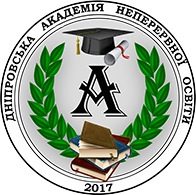
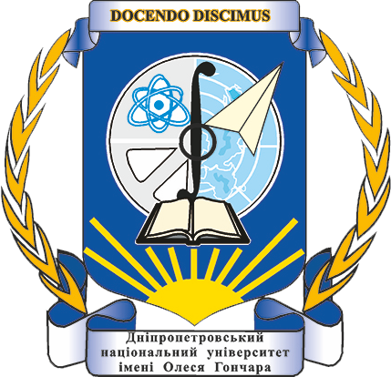
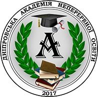
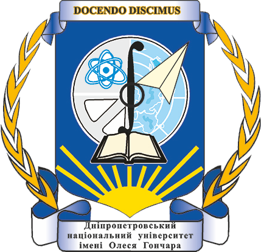

Оргкомітет Відкритого обласного наукового конкурсі "Еврика+" запрошує учнів 7, 8 та 9 класів до участі у щорічному конкурсі "Еврика+".
Відкритий обласний науковий конкурс “ЕВРИКА+” буде проходити в режимі онлайн з 05-09.05.2025.
Для участі уконкурсі потрібно зробити 2 кроки:
Зверніть увагу!
- Форма для реєстрації і виконання завдань буде відкрита з 05.05.2025.
- Цього року і реєстрація і завдання буде розміщено в одній формі .
- Приблизний час на виконання завдань2 - 4 години.
- Завдання можна зробити в будь який день протягом тижня (до 09.05.2025 року).
- Найголовніше не забути відправити форму після того, як в форму будуть записані відповіді на питання!
І все! Підсумки і переможці будуть оголошені на сайті Конкурсу.
Спробуй!
Це цікаво!